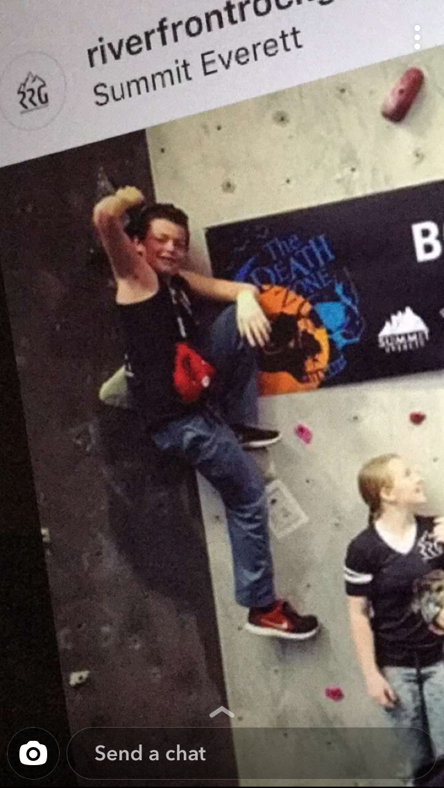

Introduction Page
Career Page
Education Page
My Interests & Hobbies
- Skiing: I am an avid skiier, and have been going up to the mountain every winter since I could walk. My family has given me the incredible opportunity to continue this passion of mine, and theres nowhere I'd rather be than a ski hill on a powder day
- Rock Climbing: Ever since I was a kid, my family would go out once or twice a summer and rock climb with my stepdad. It was here that my love grew, and now I am an avid climber as well, even joining the Gonzaga Climbing Club
- Computers: As makes sense with my major, I am intrigued by all functions of computers, from the hardware its built on to the software it runs on, to the games I can play with it
